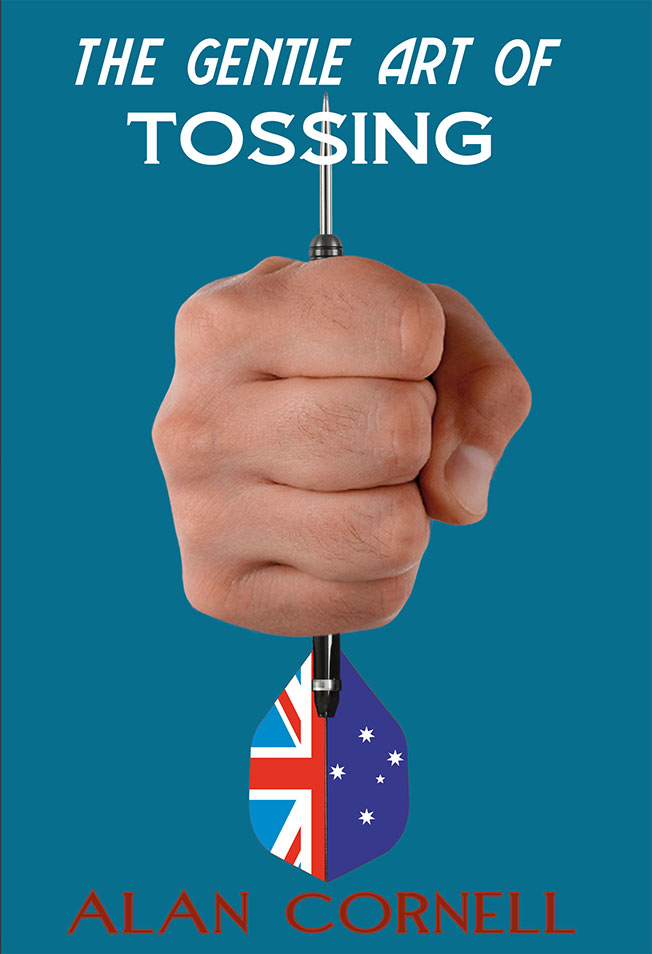
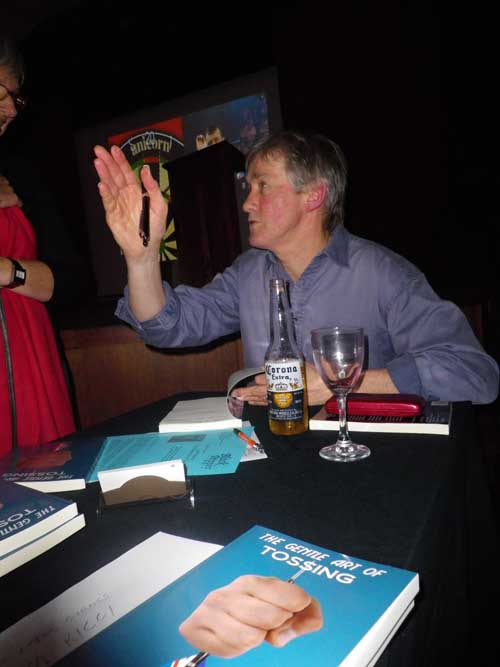

 The Gentle Art of TossingAlan Cornell A comic tale of the Old Dart and the New |
| Down to Book Description Contents Book Sample |
Down to Book Reviews Sunday Herald-Sun Wet Ink |
Down to Launch Photos |
Cornell biography | Next title Previous title Home page All publications |
|
This was more than a simple sporting contest. This was a tilt at a dream.
The little guy against the odds. Daisy and Goliath.
The little guy against the odds. Daisy and Goliath.

Ches Fanning is a downsized sports broadcaster reduced to calling sheep dog trials in rural Gippsland. He stops for counter tea at the rundown Fish Creek pub. It is the night of the local darts finals. There he spots in languid action the willowy Sam Alley, a twenty-year-old girl. Despite her parents’ reservations, he takes her under his wing. He becomes her player manager and promoter but her Australian run is derailed by power brokers. Ches decides to take Sam to England. She competes against Britain’s finest in the Pay-TV series Double Tops. He and Sam must contend with his ex and would-be wives, Helen and Hollie, the fierce local champ Tiger Magee and a hostile dartocracy. As Ches says, ‘People are going to lap up the story of the small town country girl who went to the Old Dart and whipped them on their own patch of lager-sodden axminster.’ Whether you’re a sports tragic or not, Alan Cornell’s The Gentle Art of Tossing aims straight for your funny bone and hits the target.
ISBN 9781876044688
Published 2011
212 pgs
The Gentle Art of Tossing book sample
Back to top
OF FISH AND FEATHERS
Chapters 1 to 11
THE OLD DART
Chapters 11 to 25
Back to top
Reviews
Comic Tale Hits the Target
Emma Scarpella
Sunday Herald-Sun
Bart Cummings is allergic to horses, yet he has trained 12 Melbourne Cup champions. Any sports fan will enjoy the fascinating facts peppered throughout this comic novel (if you can overlook the dubious title).
Ches Fanning, a sports broadcaster in his twilight years, discovers a prodigiously talented dart thrower in a country Victorian pub.
Her resurrects her career by convincing her to try her luck against the UK’s finest.
Pay-TV picks up the resulting series of shows and a star is born. Ches’s complicated love life adds extra humour.
Back to top
The Gentle Art of Tossing
Susan Errington
Wet Ink, No. 25
The Gentle Art of Tossing is the story of Ches Fanning, a sports broadcaster whose career is on the wane, and a young bush darts champion, Samantha Alley. When the novel opens, Ches’ television career is over and he finds himself on the country circuit, hosting sheep dog trials and calling darts’ tournaments in pubs. Ches is a classic sports’ tragic and his narration is full amusing and intriguing anecdotes about the famous and not so famous, as well as his own misdemeanours in sport, romance and life generally. The humour of the book is convincing and gentle, sometimes too gentle. I would like to have seen a more ridiculous element to some of Ches’ adventures but Ches is a very likeable character and we laugh at and pity him in turn.
What’s wonderfully drawn in the novel Is Ches’ relationshlp with Sam. Cornell paints a convincing relationship between mature promoter and young sports star. What could so easily have slid towards sleaze remains fresh and paternal under some very skillful writing. There’s no doubting Ches’ respect for Sam’s talent and his determination to get her to the top of her field. His romantic indulges remain firmly separate and with women his own age. If I have one criticism of this novel it is that the language occasionally feels a little old fashioned, but Cornell’s style is smooth and the story flows well.
The Gentle Art of Tossing is definitely one for summer holiday reading and the sports enthusiast in the family.
Back to top

Cornell biography
blackpepperpublishing.com